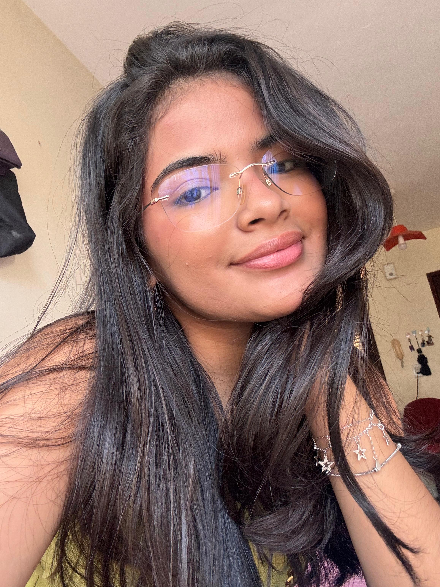

Sou uma desenvolvedora front-end apaixonada por criar experiências digitais envolventes e acessíveis. Com uma sólida formação em design e programação, dedico-me a transformar ideias em interfaces intuitivas e funcionais que encantam os usuários.

Maria Clara Lima Lustosa
Desenvolvedora Front-end no Programa Trilhas e estudante de Ciências da computaação na UFMA.